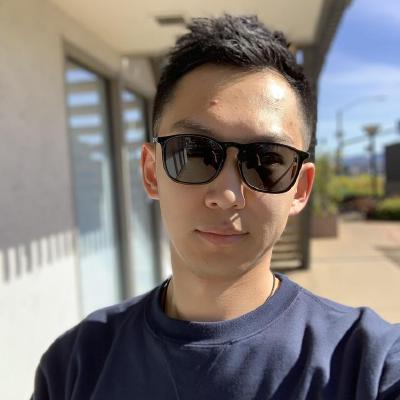

I'm a first-year Ph.D. student in Mechanical and Aerospace Engineerning Department in UC San Diego. I'm working in the Flow and Control Lab under the instructions of Prof. Thomas R. Bewley. My research focuses on the development of state-of-the-art derivative-free optimization algorithms via global surrogate model to solve nonconvex programming, with applications in robotic trajectory following problem and wavy wall shape design.